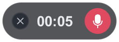
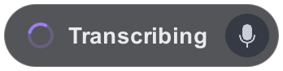
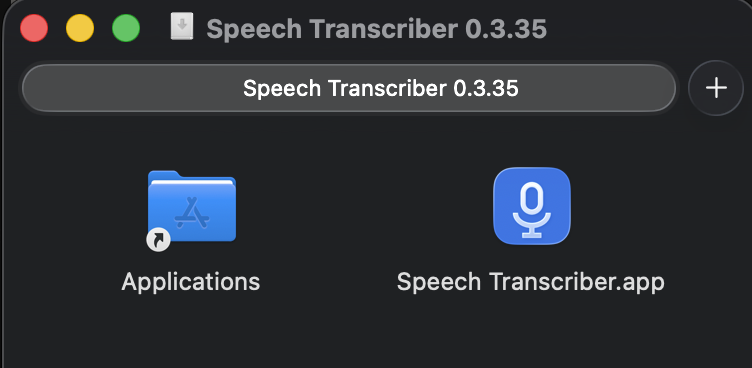
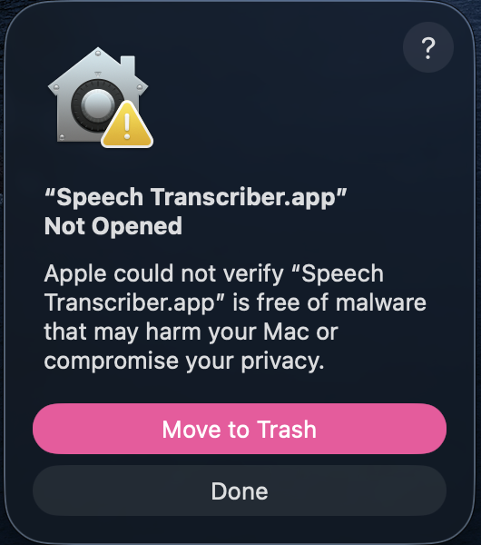

Speech Transcriber
Talk, and your words get typed. Works in any app: email, texts, ChatGPT.
- Private: stays on your computer
$8/monthFree for family & friends
-
See you at the park at 5!

Press Right Alt and talk
-

Right Alt again
-
See you at the park at 5!
It types what you said
On a Mac the key is Right ⌘
Works in any app
 Gmail
Gmail- Google Docs
- Messages
- Word
- Outlook
- Teams
- Messenger
- Discord
- Slack
- Skype
 ChatGPT
ChatGPT- Any app
Download
Not for phones, tablets, Chromebooks or older Intel Macs.
Check the download (optional)
Each file has a fingerprint (SHA-256). If yours matches, it's exactly the file Tyler published.
PowerShell: Get-FileHash $HOME\Downloads\SpeechTranscriber-Setup-*.exe
Terminal: shasum -a 256 ~/Downloads/SpeechTranscriber-*.dmg
Install
Open the file
Double-click it in Downloads.
Blue warning? It's OK
Click “More info”, then “Run anyway”. Free apps get this once.
Install, then wait once
The first time, it downloads its speech model (a few minutes).
Drag it to Applications
Open the downloaded file and drag the app onto Applications.

Real screenshot “Not Opened”? Click Done
Not “Move to Trash”. Every free app from outside the App Store gets this once.

Real screenshot Click “Open Anyway”
System Settings → Privacy & Security → scroll down.
Open it again
From Applications. Click “Open Anyway”, then use Touch ID or your password. Only the first time.
Allow 3 things
Microphone, Input Monitoring and Accessibility: click “Open System Settings” and switch Speech Transcriber on. After that it lives as a small mic icon at the top right of your screen (no window).
What's new
-
0.3.35 Oct 15, 2026
- The app tells you when an update is ready: click the message to install it.
-
0.3.34 Oct 15, 2026
- Talk while you play games: no more 30-second waits.
- Faster typing: uses your graphics card. NVIDIA owners can get an even faster download.
- No stray space at the start of an empty message box (Google Messages).
- The start sound plays even when the computer is busy.
-
0.3.33 Oct 14, 2026
- “Paste last dictation” puts it right where you were typing.
- Text apps get a relaxed chat style: no capital at the start, no period at the end.
- A green tick shows when your words are typed.
-
0.3.0 Oct 13, 2026
- First version for family and friends.
Something not working?
- Nothing appears after talking
- Click into a text box first. If it says Copied, press Ctrl V (Mac: ⌘ V).
- Lost what you said
- Mic icon by the clock → Recent dictations.
- The key does nothing
- Mic icon → System Check. Mac: allow Input Monitoring.
- Wrong microphone
- Mic icon → Settings → Microphone.
- Updates
- The app asks when a new version is ready. Click Yes; your settings stay.
- Still stuck?
- Text Tyler a photo of your screen.